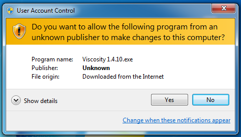
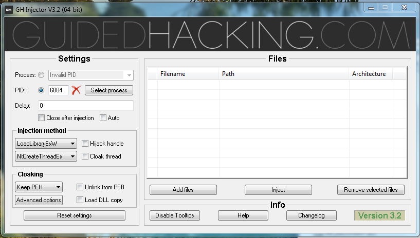
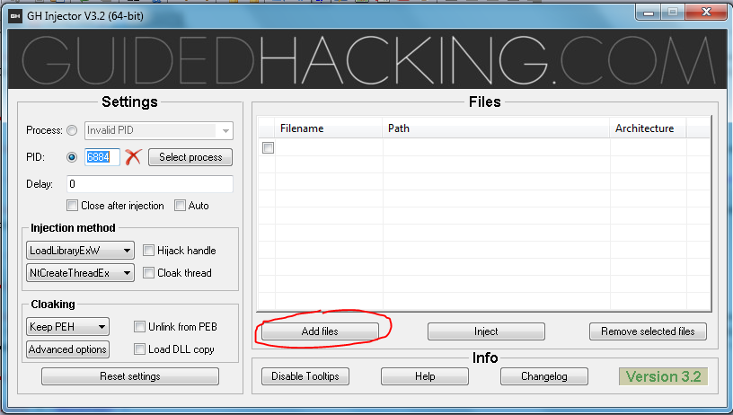
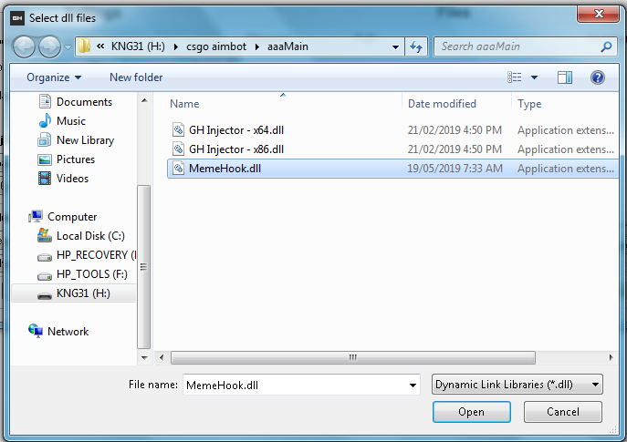
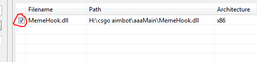
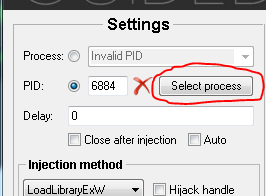
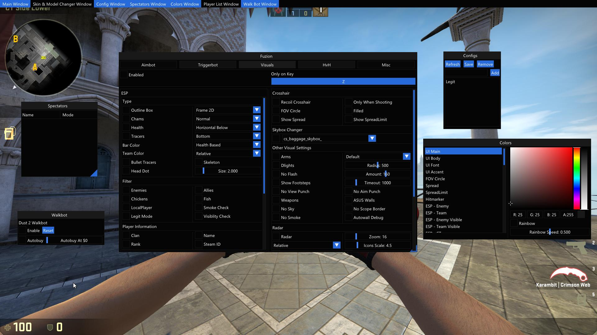

Using a cheat in CS:GO will require two parts: the dll file of the cheat, and an injector used to insert the cheat into the game process.
Remember to keep these two files in the same folder in order for the dll file to be successfully injected into the CS:GO game process!
Download the two files in the download section. Make sure to keep these two files in the same folder. Once you have downloaded both files, you will observe that there is a dll file and a zip file. If you try to open the dll file, your computer will give you an error and nothing will happen. This is because the dll file is the cheat and it will need the injector to work. Un-zip the folder called "GH Injector V3.3.zip". You will then find out the there are multiple files you can open. The next step will tell you which file to open.
As you can see there are serveral files that belong to the injector. You want to open the 64-bit injector.
Once you open the injector, your computer will probably give you this notification asking if you are sure that you want to run this file.
Your computer gives this notification when programs make changes to the computer. However, we assure to that these changes and necessary for the injector to work. Once you click "Yes" the injector should load up on your screen and look something like this.
Now you will need to select the file "MemeHook.dll" that you downloaded earlier. You can do this by going to the "Add files" tab and selecting the dll file.
 MemeHook.dll is stored in the same folder as the injector however in this image you will realise that there are only the dll files of the injector. This is because the injector will only display dll files in order to make it easier for you to find the dll you want.
Once the file had been added to the injector, click the check box to the left of your recently selected dll file.
When you click the "Inject" option, only the checked files will be injected into your game process. However you do not have to click "Inject" yet as you do not have a game process.
First run CS:GO and wait for it to fully load. After, go back to your injector and click the "Select process" tab.
After clicking on this tab, you will then see a list with all the current processes on your computer. Scroll through the list to find the CS:GO process (csgo.exe). Click on the process once you find it and click "Select".
Now that everything is setup, you can inject Meme Hook by clicking "Inject". The injector will notify you that it is injecting the cheat and afterwards, a menu will pop-up on your CS:GO game window. This is the toggle-based menu which allows you to turn on/off certain features of our cheat by clicking on selection boxes. Have fun cheating with Meme Hook!
